این سایت بهترین و محبوب ترین ابزار های هوش مصنوعی را باهم مقایسه میکند تا شما راحت تر انتخاب کنید. اگر به دنبال بهترین چت بات ، ساخت عکس و هوش مصنوعی و ابزار های کاربردی دیگر هستید جای درستی آمدید!
هوش مصنوعی چیست ؟
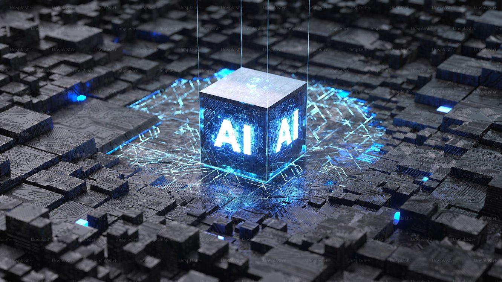
هوش مصنوعی (AI) شاخه ای از علم کامپیوتر است که به سیستم ها امکان می دهد مانند انسان ها فکر کنند ، یاد بگیرند و تصمیم بگیرند. این فناوری در بسیاری از حوزه ها از جمله پزشکی،آموزش،صنعت،هنر و ارتباطات کاربرد دارد و روز به روز نقش پررنگ تری در زندگی ما پیدا میکند. با پیشرفت علم بشریت توانسته است مدل های هوش مصنوعی پیشرفته ای بسازد که به انسان ها کمک های بسیاری میکنند. هوش مصنوعی به ماشین ها این اجازه را میدهد که داده ها را تحلیل کنند ، الگو ها را بشناسند و کارهایی انجام دهند که معمولا به هوش انسانی نیاز دارد. با شناخت بهتر ابزار های هوش مصنوعی شما میتوانید از امکانات آن ها بهره مند شوید و در مسیر پیشرفت شخصی یا حرفه ای خود گامی موثر بردارید. در ادامه همراه ما باشید تا برخی از آنها را بررسی کنیم و با یکدیگر مقایسه کنیم.
ابزار های چت بات
چت بات (chatbot) نوعی برنامه هوش مصنوعی است که میتواند به صورت خودکار با انسان ها مکالمه کند. این ابزار برای پاسخ گویی به سوالات، انجام کارهای ساده و حتی گفت و گو های طبیعی طراحی شده اند. چت بات ها در اپلیکیشن های پیامرسان، سایت ها و پلتفرم های آموزشی یا پشتیبانی استفاده می شوند. چت بات های معروف:
ChatGPT
Deepseek
Google Gemini
Microsoft Copilot
Character AI
ChatGPT
ChatGPT یکی از معروف ترین چت بات های هوش مصنوعی است که توسط شرکت OpenAI توسعه یافته است. این ابزار میتواند به زبان طبیعی با کاربران مکالمه کند و برای پاسخ به سوالات، تولید متن، ترجکه، کدنویسی و حتی آموزش مفاهیم استفاده می شود.
نقاط قوت ✅
پشتیبانی از زبان فارسی
پاسخ های دقیق و طبیعی
محیط کاربری ساده و روان
قابلیت مکالمه صوتی ، ویرایش عکس ، تشخیص عکس و درست کردن عکس
نقاط ضعف ❌
برخی قابلیت ها فقط در نسخه پولی
در صورت نداشتن اشتراک پولی، در تعداد چت کردن محدود هستید
DeepSeek
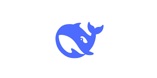
DeepSeek یک چت بات هوش مصنوعی چینی است که تمرکز آن بر دقت، پاسخ های علمی و توانایی تحلیل متون پیچیده است . این ابزار توسط یک تیم تحقیقاتی چینی توسعه یافته و شباهت زیادی به ChatGPT دارد.
نقاط قوت ✅
پاسخ های دقیق در حوزه علمی و فنی
رابط کاربری ساده و سریع بدون پیچیدگی
رایگان و بدون نیاز به ثبت نام
پشتیبانی از سوالات پیچیده و تخصصی
نقاط ضعف ❌
پشتیبانی محدود از زبان فارسی
بدون امکانات پیشرفته
Google Gemini
Google Gemini (نسخه جدید Bard) چت بات پیشرفته شرکت گوگل است که با اتصال به موتور جست و جوی گوگل، پاسخ هایی دقیق و بروز ارائه میدهد. این ابزار با فناوری LaMDA و Gemini AI ساخته شده و تمرکز آن بر پاسخ های واقعی و دقیق با سرعت زیاد است.
نقاط قوت ✅
اتصال به موتور جست و جوی گوگل برای اطلاعات
یکپارچه با سرویس های Google
پاسخ های دقیق در موضوعات عمومی و تخصصی
طراحی کاربرپسند و حرفه ای
نقاط ضعف ❌
به صورت کامل از زبان فارسی پشتیبانی نمیکند
برای کشور ایران محدودیت دسترسی دارد (فیلتر است)
گاهی پاسخ ها به صورت خیلی رسمی یا خلاصه است
Microsoft Copilot
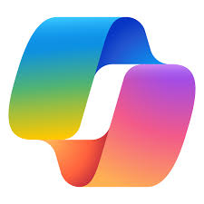
Copilot دستیار هوشمند مایکروسافت است که در نرم افزار هایی مثل Excel , Word و PowerPoint استفاده میشود. این چت بات با کمک فناوری ChatGPT ساخته شده و به کاربران کمک میکند سریع تر بنویسند، داده تحلیل کنند و ارائه بسازند. این برنامه مناسب برنامه نویسان است تا کارهایشان را بهتر پیش ببرند.
نقاط قوت ✅
یکپارچه سازی کامل با نرم افزار های Microsoft Office
تولید خوکار متن، تحلیل داده ها و ایجاد فرمول در Excel
مناسب برای برنامه نویسان و محیط های کاری و حرفه ای
امنیت بالا و قابل اطمینان برای شرکت ها
نقاط ضعف ❌
نیاز به اشتراک Microsoft 365 برای استفاده
فقط در محیط نرم افزار های آفیس قابل استفاده است
مثل ChatGPT یا Deepseek با کاربر زیاد طبیعی صحبت نمیکند و برای گفت و گو طبیعی زیاد مناسب نیست
Character AI
Character AI چت باتی سرگرم کننده و متفاوت است که به شما اجازه میدهد با شخصیت های واقعی و تخیلی مکالمه کنید. میتوانید شخصیتی بسازید یا با شخصیت هایی مثل انیشتین، بازیگران یا کاراکتر های انیمه ای گفت و گو کنید.
نقاط قوت ✅
امکان ساخت و مکالمه با شخصیت های تخیلی و واقعی
رابط کاربری جذاب و سرگرم کننده
مناسب برای ایده پردازی، نویسندگی و داستان سازی
رایگان و بدون نیاز به اشتراک
نقاط ضعف ❌
گفت و گو ها گاهی از واقعیت فاصله میگیرند
بیشتر جنبه سرگرمی دارد نه کاربرد جدی یا علمی
پشتیبانی ضعیف از زبان فارسی
جمع بندی نهایی چت بات ها
نام چت بات
شرکت سازنده
پشتیبانی از زبان فارسی
مناسب برای
ChatGPT
OpenAI
بله ✅
تولید متن و آموزش
DeepSeek
DeepSeek AI
بله (محدود) ✅
تحلیل علمی، پاسخ های تخصصی
Google Gemini
Google
بله (نسبی) ✅
پاسخ به سوالات عمومی و جست و جو همزمان
Microsoft Copilot
Microsoft
خیر ❌
برنامه نویسی و محیط کاری
Character.AI
Character Technologies
خیلی ضعیف ❌
تفریح و گفت و گو با شخصیت های خیالی
⚠️ نکته : اینکه هوش مصنوعی زبان فارسی را پشتیبانی نمیکند در این جدول، به این معنا نیست که نمیتواند فارسی بخواند و جواب بدهد بلکه یعنی "ترجمه درست و دقیق نمیتواند بکند" ، "اشتباهات گرامری را در زبان فارسی نمیتواند تشخیص دهد" ، "پاسخ طبیعی به زبان فارسی نمیتواند بدهد" و "نمیتواند تفاوت های فرهنگی و نگارشی را تشخیص بدهد"
ابزار های تولید عکس
هوش مصنوعی در زمینه تولید تصویر، توانایی خلق عکس های واقعی یا هنری تنها با توصیف متنی را فراهم کرده است. این ابزار ها می توانند تصاویر خلاقانه، رئال یا فانتزی بسازند و در زمینه هایی مانند طراحی، تبلیغات، آموزش و تولید محتوا استفاده شوند. حتی بدون داشتن دانش طراحی، میتوان با چند کلمه، تصاویری شگفت انگیز تولید کرد. هوش مصنوعی های معروف برای تولید عکس :
Leonardo AI
Midjourney
DALL-E 3
Bing Image Creator
Adobe Firefly
Canva AI
Leonardo AI
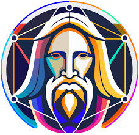
Leonardo AI یک ابزار پیشرفته تولید تصویر با هوش مصنوعی است که به ویژه برای خلق تصاویر هنری، گیمینگ و تصاویر فتورئال طراحی شده است. این پلتفرم به کاربران امکان می دهد تا با استفاده از توضیحات متنی یا ویرایش تصاویر موجود، آثاربصری بیشتر با Leonardo AI و با کیفیت بالا و خلاقانه بسازند. این برنامه مناسب طراحان، هنرمندان دیجیتال و گیمر ها است که به دنبال تولید تصویر واقع گرایانه و هنری با جزئیات بالا هستند.
نقاط قوت ✅
کیفیت بسیار بالا و تصاویر فتورئال
مناسب برای تولید تصاویر هنری و خلاقانه
امکانات پیشرفته برای ویرایش و سفارشی سازی تصاویر
پشتیبانی خوب
امکان استفاده رایگان البته با کمی محدودیت
نقاط ضعف ❌
نسخه رایگان در تعداد تصاویر تولیدی محدودیت دارد
کاربری ممکن است برای مبتدیان کمی پیچیده باشد
قیمت نسخه های پیشرفته نسبتا بالاست
Midjourney
Midjourney یکی از پیشرفته ترین ابزار های تولید تصویر با هوش مصنوعی است که به ویژه برای خلق آثار هنری با کیفیت بالا و سبک خاص طراحی شده. بر خلاف دیگر ابزار ها برای استفاده از Midjourney کاربران باید وارد یک سرور اختصاصی در پلتفرم دیسکورد شوند و دستورات خود را از طریق پیام متنی ارسال کنند. تصاویر تولیدی بسیار هنری، دقیق و زیبا هستند و بیشتر در طراحی کاور، تصویر سازی کتاب، گرافیک مفهومی و تبلیغات استفاده میشوند.
نقاط قوت ✅
کیفیت بسیار بالا و خروجی های هنری منحصر به فرد
کنترل دقیق بر روی سبک، نور، بافت و جزئیات تصویر
قابلیت تعامل و دیدن نمونه آثار کاربران دیگر
تولید سریع و روان (در نسخه پولی)
نقاط ضعف ❌
فقط از طریق Discord قابل استفاده است
نیاز به عضویت و آشنایی با کار در سرور دیسکورد
نسخه رایگان ندارد (فقط تست محدود در گذشته داشت)
هزینه ماهانه نسبتا بالا برای استفاده حرفه ای
DALL-E 3
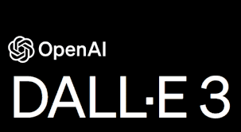
DALL-E 3 یک مدل پیشرفته تولید تصویر با استفاده از متن است. این ابزار درحال حاضر درون نسخه پلاس (پولی) ChatGPT قرار دارد و به کاربران این امکان را میدهد که فقط با چند جمله ساده، تصاویر دقیق، واقع گرایانه یا حتی فانتزی به طور خاص خلق کنند.
نقاط قوت ✅
استفاده آسان و مستقیم داخل ChatGPT (نسخه Plus)
درک دقیق توضیحات متنی و توصیف های پیچیده
قابلیت ویرایش تصویر تولید شده با دستور متنی
نقاط ضعف ❌
فقط در نسخه پولی ChatGPT در دسترس است
گاهی در جزئیات ریز مثل دست یا چشم ضعف دارد
امکان دانلود با کیفیت بالا محدود است
امکانات ویرایش نسبت به برخی ابزار ها محدود تر است
Bing Image Creator
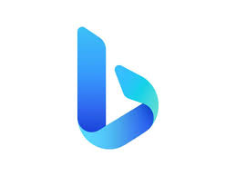
Bing Image Creator یک ابزار رایگان تولید تصویر با هوش مصنوعی است که توسط مایکروسافت توسعه داده شده است. این ابزار به کاربران این امکان را می دهد که به سادگی از طریق مرورگر خود و بدون نیاز به ثبت نام، تصاویر خلاقانه و متنوع ایجاد کنند. Bing Image Creator مناسب کسانی است که می خواهند به سرعت و بدون پیچیدگی، تصاویر جذاب بسازند و بیشتر برای استفاده های روزمره و محتوا های ساده کاربرد دارد.
نقاط قوت ✅
کاملا رایگان و بدون نیاز به ثبت نام
استفاده آسان و سریع از طریق مرورگر
پشتیبانی نسبی از زبان های مختلف (اما فارسی محدود)
مناسب برای کاربران مبتدی و تولید محتوای سریع
نقاط ضعف ❌
کیفیت تصویر معمولا پایین تر از نسخه های پولی است
امکانا ویرایش تصویر محدود
محدودیت در تعداد استفاده روزانه
پشتیبانی محدود از زبان فارسی و برخی زبان ها
Adobe Firefly
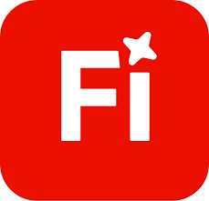
Adobe Firefly یک ابزار هوش مصنوعی برای تولید تصویر و محتوای گرافیکی است که توسط شرکت Adobe ارائه شده است. این پلتفرم برای طراحان گرافیک، تولید کنندگان محتوا و هنرمندان دیجیتال طراحی شده تا بتوانند با کمک هوش مصنوعی، تصاویری با کیفیت بالا و عناصر گرافیکی متنوعی خلق کنند. Firefly قابلیت تولید تصاویر واقع گرایانه، هنری و حتی متحرک را دارد.
نقاط قوت ✅
کیفیت بسیار بالا و تصاویر کاملا حرفه ای
ادغام عالی با نرم افزار های Adobe Creative Cloud
ابزار های پیشرفته و کنترل دقیق بر روی تصویر
مناسب برای پروژه های گرافیکی حرفه ای و تبلیغاتی
امکان استفاده از مدل های متنوع برای خلق سبک های مختلف
نقاط ضعف ❌
نیاز به اشتراک Adobe Creative Cloud
پیچیدگی زیاد برای کاربران مبتدی
محدودیت در نسخه رایگان و قیمت بالای نسخه کامل
وابستگی به نرم افزار های Adobe برای بهره وری کامل
Canva AI
Canva AI بخشی از پلتفرم طراحی گرافیک آنلاین است که با استفاده از هوش مصنوعی به کاربران اجازه می دهد به سادگی تصاویر، طرح ها و محتوای گرافیکی تولید کنند. این ابزار به ویژه برای افرادی مناسب است که تخصص طراحی حرفه ای ندارند و میخواهند در کمترین زمان، طرح جذاب و متنوع خلق کنند. Canva AI شامل قابلیت هایی مانند تولید تصویر از متن، اصلاح خودکار عکس و طراحی قالب های آماده میشود.
نقاط قوت ✅
بسیار کاربرپسند و ساده برای مبتدیان
دسترسی آسان در قالب یک پلتفرم همه کاره
ترکیب قدرتمند با ابزار های طراحی کانوا
مناسب رای تولید سریع محتوا و تصاویر تبلیغاتی
نسخه رایگان با امکانات قابل قبول
نقاط ضعف ❌
محدودیت امکانات پیشرفته نسبت به ابزار های تخصصی تر
کیفیت تصاویر تولیدی ممکن است در حد ابزار های حرفه ای نباشد
برخی امکانات تنها در نسخه پولی در دسترس است
جمع بندی نهایی ابزار های تولید تصویر
نام ابزار
شرکت سازنده
رایگان
مناسب برای
Leonardo AI
Leonardo Labs
بله (محدود)✅
طراحان، هنرمندان، گیمیرها
Midjourney
Midjourney inc.
خیر ❌
طراحی هنری، تصویر سازی کتاب، گرافیک مفهومی
DALL-E 3
OpenAI
خیر ❌
تولید تصاویر دقیق و خلاقانه
Bing Image Creator
Microsoft
بله ✅
کاربران مبتدی، تولید محتوای سریع
Adobe Firefly
Adobe
بله (محدود)✅
طراحان حرفه ای، تولید کنندگان محتوا
Canva AI
Canva
بله (محدود)✅
مبتدیان، تولید سریع محتوا
ابزار های تولید ویدیو
با پیشرفت تکنولوژی، هوش مصنوعی توانسته در تولید ویدیو هم به انسان ها کمک کند. امروزه ابزار هایی وجود دارند که تنها با وارد کردن یک متن ساده یا چند تصویر، می توانند ویدیو هایی خلاقانه، حرفه ای و آماده انتشار تولید کنند. این ازار ها برای تولید کنندگان محتوا، مدرس ها، بلاگرها و کسب و کار های آنلاین بسیار کاربردی هستند. هوش مصنوعی های معروف برای تولید ویدیو:
Pictory AI
Runway ML
Synthesia
HeyGen
Invideo AI
Pictory AI
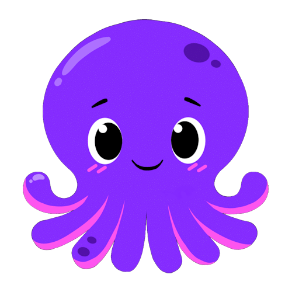
Pictory AI یک ابزار هوش مصنوعی قدرتمند برای ساخت ویدیو از روی متن است. این ابزار به کاربران اجازه میدهد متن یا مقاله ای وارد کنند و به صورت خودکار یک ویدیو جذاب همراه با تصاویر، کلیپ های آماده و موسیقی ایجاد کنند. بیشتر برای ساخت ویدیو های آموزشی، محتوای شبکه اجتماعی و خلاصه سازی محتوای متنی استفاده می شود.
نقاط قوت ✅
دارای قالب های آماده و متنوع
مناسب برای یوتیوب، اینستا، تبلیغات و آموزش
امکان افزودن صدا، لوگو، زیرنویس و برندسازی
رابط کاربری ساده برای کاربران غیرحرفه ای
نقاط ضعف ❌
نسخه رایگان محدودیت زمانی و امکانات دارد
کیفیت صدای گوینده مصنوعی است (در نسخه رایگان)
برای ویدیو های طولانی و کاملا سفارشی محدود است
Runway ML
Runway ML یکی از قدرتمند ترین و خلاقانه ترین ابزار های هوش مصنوعی برای تولید و ویرایش ویدیو است. این پلتفرم بیشتر به خاطر قابلیت هایی مثل حذف پس زمینه ویدیو، ایجاد افکت های سینمایی و حتی ساخت ویدیو از تصاویر یا مدل های سه بعدی معروف است. Runway ML بیشتر برای کاربرانی طراحی شده که می خواهند بدون نیاز به نرم افزار های پیچیده مثل Premiere یا After Effects ویدیو هایی با جلوه های ویژه حرفه ای بسازند. حتی بسیاری از فیلم ساز ها و تولید کنندگان محتوا از آن استفاده میکنند.
نقاط قوت ✅
قابلیت حذف پس زمینه از ویدیو بدون پرده سبز
ابزار های حرفه ای برای تدوین، فیلترگذاری، افکت های AI
امکان تولید ویدیو از متن، تصویر و یا حتی نقاشی
دارای مدل های هوش مصنوعی پیشرفته مثل Gen-2 برای ویدیو های خلاقانه
رابط کاربری حرفه ای و در عین حال آسان
نقاط ضعف ❌
نیاز به سیستم نسبتا قوی برای کار روان (در حالت Local)
برخی ابزار ها رایگان نیستند و باید اشتراک تهیه شود
یادگیری ابزار های پیشرفته ممکنه برای مبتدیان کمی سخت باشد
خروجی های رایگان دارای واترمارک هستند
Synthesia
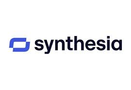
Synthesia یکی از معروف ترین ابزار های هوش مصنوعی برای تولید ویدیو با چهره و صدای انسان نماست. در این ابزار، تنها با وارد کردن متن، یک فرد مجازی (آواتار) چلوی دوربین ظاهر میشود و همان متن را با چهره، حرکت لب و زبان، حرکت بدن و صدای طبیعی برای شما اجرا میکند. این ابزار بیشتر برای آموزش های شرکتی، ویدیو های پرزنتیشن، معرفی محصول و آموزش های چند زبانه کاربرد دارد.
نقاط قوت ✅
تولید ویدیو از متن با آواتار های انسان نما
پشتیبانی از بیش از 60 زبان مختلف از جمله زبان فارسی
بدون نیاز به دوربین، میکروفون یا تجهیزات ضیط
رابط کاربری ساده و قالب های آماده
مناسب برای آموزش، پرزنتیشن، و تبلیغات
نقاط ضعف ❌
آواتار ها هنوز 100% طبیعی به نظر نمی رسند
نسخه رایگان ندارد (نسخه دمو فقط قابل تست است)
شخصی سازی محدود در نسخه ارزان تر
قیمت اشتراک بالا برای استفاده حرفه ای
HeyGen
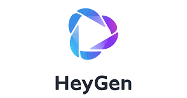
HeyGen یک ابزار تولید ویدیو با استفاده از چهره های دیجیتالی و صدای مصنوعی است. این ابزار به شما این اجازه را میدهد که با انتخاب یک آواتار (شخصیت مجازی) فقط وارد کردن متن، ویدیوی حرفه ای بسازید که آن آواتار متن شما را با زبان دلخواه و صدای طبیعی بیان میکند. برخلاف ابزار های مشابه HeyGen امکانات بیشتر برای تنظیم سبک صحبت، زبان بدن، حالات صورت و حتی تغییر لباس شخصیت ها دارد.
نقاط قوت ✅
چهره های متنوع و قابل تنظیم
صدای طبیعی با پشتیبانی از زبان فارسی
رابط کاربری ساده و خروجی سریع
قابلیت شخصی سازی حالات صورت، لباس و پس زمینه
مناسب برای مارکتینگ، آموزش و محتوا های رسمی
نقاط ضعف ❌
رایگان نیست، فقط نسخه دمو در دسترس است
چهره ها گاهی مصنوعی یا تکراری به نظر میرسند
امکانات حرفه ای فقط در نسخه Pro
محدودیت در افزودن حرکات خاص یا تعامل واقعی
Invideo AI
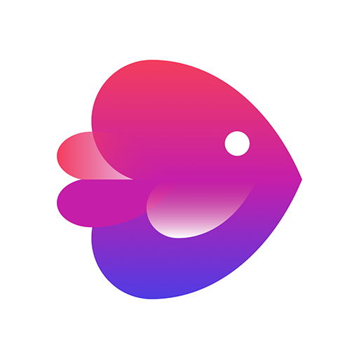
Invideo AI یک ابزار هوش مصنوعی برای ساخت ویدیو های تبلیغاتی، معرفی یا محتوای شبکه های اجتماعی است که با وارد کردن متن یا ایده اولیه، به صورت خودکار ویدیو های آماده تولید میکند. این ابزار برای کاربرانی که به دنبال ساخت سریع و آسان ویدیو هستند مناسب است. از قالب های آماده گرفته تا افزودن موزیک، زیرنویس، صدا کذاری حتی پیشنهاد سبک و طراحی، همه چیز در Invideo با چند کلیک انجام میشود. همچنین نسخه ساده تر و مبتدی به نام Invideo.io هم برای کاربران غیرحرفه ای ارائه شده.
نقاط قوت ✅
ساخت ویدیو از متن با قالب های آماده
قابلیت افزودن زیرنویس، لوگو، موزیک و انیمیشن
مناسب برای شبکه های اجتماعی
دارای کتابخانه بزرگ از ویدیو و تصویر استوک
نسخه رایگان با امکانات قابل قبول
نقاط ضعف ❌
ویدیو ها در نسخه رایگان واترمارک دارند
گاهی متن به خوبی به ویدیو تبدیل نمیشود
در نسخه رایگان محدودیت خروجی و کیفیت دارد
گاهی رندر ویدیوها کمی زمان بر است
جمع بندی نهایی ابزار های تولید ویدیو
نام ابزار
شرکت سازنده
رایگان
مناسب برای
Pictory AI
Pictory inc.
بله (محدود)✅
آموزش و خلاصه سازی
Runway ML
Runway
بله (محدود)✅
فیلم سازی، جلوه های ویژه، تدوین هوشمند
Synthesia
Synthesia LTD.
خیر ❌
ویدیو با آواتار سخنگو، آموزش و مارکتینگ،
HeyGen
HeyGen inc.
بله (محدود)✅
شبکه اجتماعی، تبلیغات، تولید سریع محتوا
Invideo AI
Invideo
بله (محدود)✅
شبکه اجتماعی، تبلیغات، تولید سریع محتوا
نتیجه گیری نهایی
با پیشرفت سریع هوش مصنوعی، ساخت محتوا دیگر نیازمند مهارتهای پیچیده و ابزارهای تخصصی نیست. چه بخواهید تصویری هنری بسازید، چه ویدیویی آموزشی یا تبلیغاتی تولید کنید، ابزارهای هوش مصنوعی معرفیشده در این سایت، شما را از صفر تا صد همراهی میکنند. هر ابزار ویژگیها و محدودیتهای خاص خود را دارد. انتخاب ابزار مناسب بستگی به نیاز شما، نوع محتوا و میزان بودجهتان دارد. اگر به دنبال سرعت و سادگی هستید، ابزارهایی مثل Pictory و Invideo گزینههای خوبی هستند. اگر کیفیت، شخصیسازی و حرفهای بودن برایتان اهمیت بیشتری دارد، ابزارهایی مثل Runway ML و Synthesia میتوانند انتخاب بهتری باشند. در نهایت، آیندهی تولید محتوا بهسمت هوش مصنوعی حرکت میکند. شناخت درست ابزارها، اولین قدم برای همراه شدن با این آینده است.